![[LinuxFocus-icon]](XMRM.files/logolftop.gif) |
| Домой | Карта | Индекс | Поиск |
| | |
| Новости |
| |
Архивы |
| |
Ссылки |
| |
Про LF
| |
| Эта заметка доступна на: English
Castellano
Deutsch
Francais
Portugues
Russian
Turkce
|
![[Photo de l'auteur]](XMRM.files/Yves-Ceccone.jpg)
автор Yves Ceccone
Об авторе:
Был фотографом, занялся компьютерной графикой
и с тех пор никогда не выпускал мышь из рук.
Содержание:
- Инсталляция
- Идея
- Меню
и основные функции.
- Продвижение
морфинга
- Позиционирование
векторов
- Просчёт
анимации
- Сохранение
анимации
- Быстрое
создание морфинга
- Страница
отзывов
|
XMRM : Морфинг с Линуксом
Резюме:
XMRM (Multi Resolution Morphing for X) Это программа для морфинга
позволяющая создать mpeg видео на основе двух картинок, где одна из картинок
плавно трансформируется (в соответствии со многими параметрами) в другую. Эта
статья описывает основные функции программы (спасибо очень полной документации
на английском языке доступной на сайте XMRM), а также приводит пример небольшой
анимации показывающей, как легко можно получить интересные результаты.
Инсталляция
Версия использованная в этой статье взята из RPM (RedHat
6.0), исходники можно взять тут: http://www.cg.tuwien.ac.at/research/ca/mrm/xmrm.html.
Кроме самой программы для того, чтобы сохранить анимацию в виде mpeg файла
вам также понадобится проинсталлировать "tifftopnm" и "ppmtoyouvsplit", оба
содержатся в пакете "netpbm01mar94", который вы можете найти здесь: ftp://ftp.x.org/contrib/utilities/
а "mpeg" здесь: ftp://ftp.x.org/contrib/utilities/
Идея
XMRM работает следующим образом: вы загружаете две картинки, одна
называется "исходной", а вторая "целевой". Далее используя вектора вы обводите
точки на обеих картинках так, чтобы все точки на одной линии соответствовали на
обеих картинках. Эта обводка определит контуры морфинга. После того, как вы
выберете тип морфинга, качество, количество шагов (кадров), вы просчитываете
анимацию, которая потом может быть сохранена как mpeg.
Меню и основные функции.
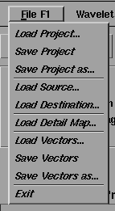
Это меню выполняет двойную функцию, так как каждая команда
соответствует кнопке в интерфейсе программы.
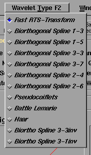
Это меню позволяет выбрать
тип вайвлета, то есть трансформации. Различные опции представляют собой
различные алгоритмы преобразования картинок. В большинстве случаев, особенно для
предварительного просмотра достаточно "RTS-Transform". Для получения
высококачественных результатов используйте от "Biorthogonal Spline" до "Battle
Lemarie" (котрые идут от самых сложных до самых медленных).
Три последних
могут дать смешные результаты.
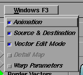
Это меню позволяет прятать
или показывать различные рабочие окна.
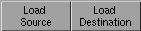
XMRM использует формат TIFF.
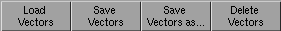
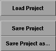
Все ваши
настройки, включая векторы, имена картинок, параметры и другое может быть
сохранено, загружено или сохранено как ...
Проекты сохраняются с расширением
.prj; векторы сохраняются в отдельных файлах с расширением .prj.vec.
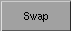
Поменять местами исходную и целевую картинки, а также векторы для
изменения направления морфинга на противоположное.
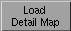
Загрузить чёрно-белую картинку
для использования "Detail Map Morph". Цветная картинка будет конвертирована в
чёрно-белую.
Простой морфинг смешиванием исходной и целевой картинки.
Эта опция
использует черно белую картинку как маску для морфинга. Области на исходной и
целевой картинке соответствующие белому цвету на маске будут трансформироваться
быстро, а области соответствующие черному цвету на маске будут
трансформироваться медленно.
Только исходная картинка
трансформируется на основании векторов.
Неожиданные эффекты гарантированы!
Позволяет вам создать последовательность начиная с менее детальной
области на исходной и целевой картинке, продолжить в обратном направлении и
вернуться к началу, чтобы завершить цикл.
В продвинутом режиме
"wavelet-functions" может быть выбрана и настроена отдельно; в простом режиме
всегда выбрано 1:
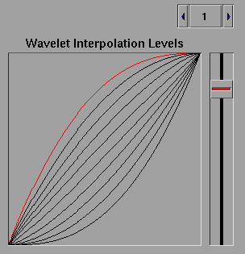
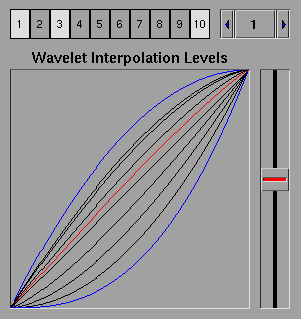
С
опцией "high quality" (высокое качество ) вычисления могут занять в 4 раза
больше времени...
Эта опция добавляет невидимые векторы на четырёх сторонах
обоих картинок (исходной и целевой ) так, чтобы избежать деформации границ
картинок при морфинге.
Когда эта кнопка не нажата, используется стандартный морфинг.
Эта функция определяет вес исходной и целевой картинок для каждого кадра
анимации. Когда она нажата используется продвинутый режим трансформации с
использованием вейвлетов, который настраивается с помощью опции "Advanced Mode".
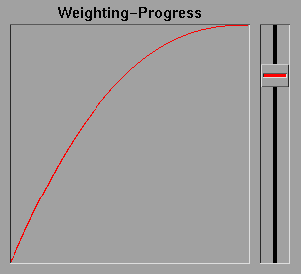
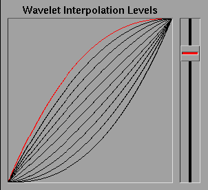
Продвижение морфинга
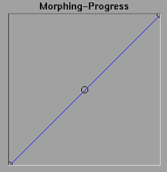
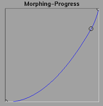
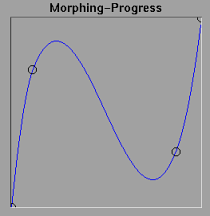
Возможно
изменять продвижение морфинга: ось X представляет собой время: слева исходная
картинка; справа целевая.
На оси Y низ это исходная картинка, а верх -
целевая.
На приведенных выше трёх примерах вы видите обычное продвижение,
продвижение где целевая картинка появляется ближе к концу, а также продвижение с
петлёй.
Для добавления или изменения положения точки используйте левую
кнопку мыши, для удаления - правую.
Позиционирование векторов
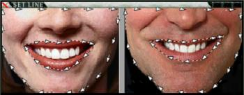
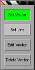
После
того, как обе картинки загружены, используйте инструмент "Edit" для обводки
векторами контуров для морфинга на обеих картинках. Чем больше количество
векторов, тем качественнее будет морфинг.
Также возможно создать несколько
обводок: например в документации к программе есть пример морфинга медведя и
леопарда, где используются контуры для головы, а также для каждого из глаз,
всего три обводки на фотографию.
Просчёт анимации
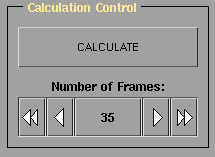
Здесь вы
определяете количество картинок (кадров) содержащихся в анимации, что определяет
её длительность (вместе с частотой кадров в секунду) и рендеринг (плавный,
прерывистый...) анимации.
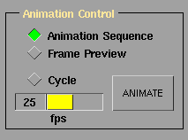
Здесь вы устанавливаете
частоту кадров в секунду, а также цикличность анимации используя клавишу "Cycle"
.
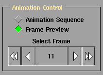
Опция
"frame preview" предназначена для просмотра определённой картинки в
анимации.
Сохранение анимации
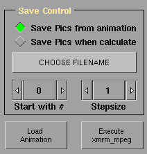
"
Save pics from animation"--Сохранить каждый кадр
как tiff файл после того, как анимация будет просчитана. Вы должны выбрать
директорию и базовое имя файла base_filename.tif. (Файлы будут запомнены под
именами base_filename000.tif; base_filename001.tif, base_filename002.tif, и
т.д.)."
Save pics when calculate" -- Сохранить те же файлы во время
просчёта анимации. Вы должны выбрать имя файла до того, как нажмёте "calculate".
Эта опция даёт лучшее качество цвета в картинках.
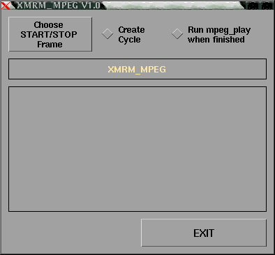
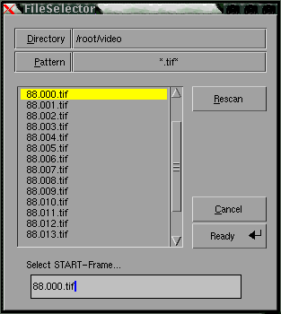
Вы вызываете этот диалог
нажав "Execute xmrm_mpeg". Затем вы выбираете первую и последнюю картинку
анимации используя кнопку "choose start/stop frame". Нажав кнопку "GO" вы
запускаете последнюю операцию по созданию mpeg анимации.
Вы также можете
создать цикл и запустить mpeg_play после того, как анимация будет создана.
Быстрое создание морфинга
Для начала две картинки, использованные в
статье можно скачать здесь:
01.tif
и здесь02.tif
(90 kb каждая)
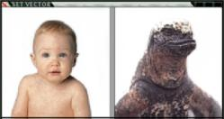
Нажмите "Load Source" и
загрузите 01.tif, затем нажмите "Load Destination" для загрузки 02.tif.
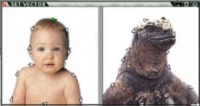
Используя
инструмент "Set vector", обведите изображение ребенка с помощью векторов.
Для
использования этого инструмента нажмите левую кнопку мыши и растягивайте вектор
до необходимой длины.
Вы увидите, что одна из стрелок вверху головы ребенка
зеленая. Эта отметка поможет вам начертить и разместить то же самое количество
векторов на целевой картинке, как и на исходной. После того, как закончите
обводку первой картинки и перейдем ко второй, вы увидите зеленую стрелку на
первой линии, это сделает работу проще.
А это параметры, которые я
использовал для получения интересных результатов:
- Simple morph (простой
морфинг )
- Border vector (граничные векторы )
- use wavelets
(использование вейвлетов )
- Курсор "wavelet interpolation levels" поднят
до 3/4.
- Процесс морфинга прямолинейный и центрированный
- Количество
кадров: 50
- Выбрано "Animation sequence" и 25 кадров.сек
Теперь
нажмите "calculate" чтобы сгенерировать анимацию; вы можете просмотреть ее, а
также изменить нажав кнопку "animate". Будьте осторожны: нажав "calculate" еще
раз вы сотрете предыдущую анимацию.
Добившись удовлетворительных результатов
пометьте "save pics from animation" и выберите имя файла и директорию. Здесь
будут сохранены 50 .tif файлов сгенерированных по команде "ready" в диалоге,
открывающемся с "choose filename".
Последнее: нажмите "Execute xmrm_mpeg",
выберите filename000.tif как START-frame (начальный кадр) и filename049.tif как
LAST-frame (последний кадр) и нажмите "GO" для создания файла mpeg. Этот файл
будет называться filename.mpg и будет создан в том же каталоге, что и 50 файлов
tif .
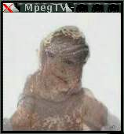
Легко, нет?
Эта анимация (в
полном размере) доступна здесь
как mpg файл или как анимированный
gif.
Страница отзывов
У каждой заметки есть страница отзывов. На этой
странице вы можете оставить свой комментарий или просмотреть комментарии других
читателей.
Webpages
maintained by the LinuxFocus Editor team
©
Yves Ceccone, FDL
LinuxFocus.org
Click here to report a fault or send a comment to
LinuxFocus
|
Translation
information:
|
2001-10-30, generated by lfparser version 2.17